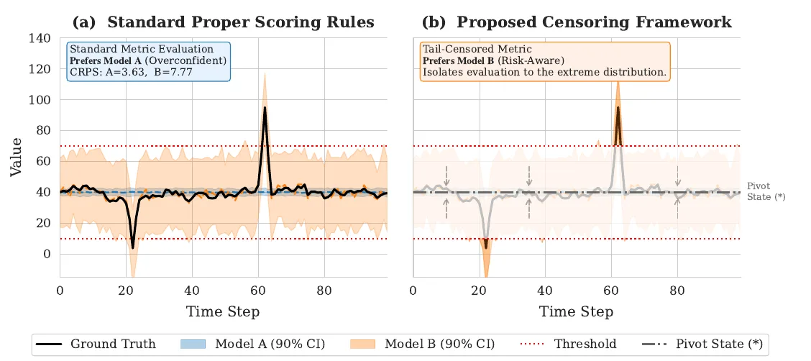

My research focuses on probabilistic time-series forecasting and foundation models for sequential data. I am a first-year PhD student in the EPSRC CDT in Machine Learning Systems, School of Informatics, University of Edinburgh, advised by Prof. Amos Storkey and Prof. Víctor Elvira; my research is funded by the EPSRC grant no. EP/Y03516X/1 and the University of Edinburgh. I am currently a research intern at Microsoft Research Asia (Machine Learning group, with Chang Xu), Sep–Nov 2026, working on probabilistic multivariate time-series forecasting foundation models. Previously, I completed an MSc in Computer Software and Theory at Peking University under Prof. Zhi Jin, and a BSc in MORSE at Lancaster University.
I'm happy to chat about time-series forecasting research — feel free to email me.
Email / CV / CV (Mandarin) / LinkedIn / GitHub / Google Scholar
I am broadly interested in improving time-series foundation models for real-world deployment. Practical time-series data is messy: observations arrive irregularly, channels are multivariate with complex cross-variable dependencies, underlying processes are non-stationary, and useful signal is often buried in noise. My work explores how foundation models can be made robust to these conditions: probabilistic forecasting that accurately quantifies uncertainty, and evaluation methods that capture performance on real-world use cases and important downstream tasks, not average benchmark performance. I am particularly interested in architectures that scale linearly with sequence length, such as SSMs and xLSTM, as efficient alternatives to quadratic-attention transformers for long-horizon time-series modelling.

Censored signature-kernel MMD metrics that stay strictly proper while focusing evaluation on distribution tails and high-utility regions; benchmarks of time-series foundation models show that capturing the overall distribution well doesn't guarantee good tail forecasts.